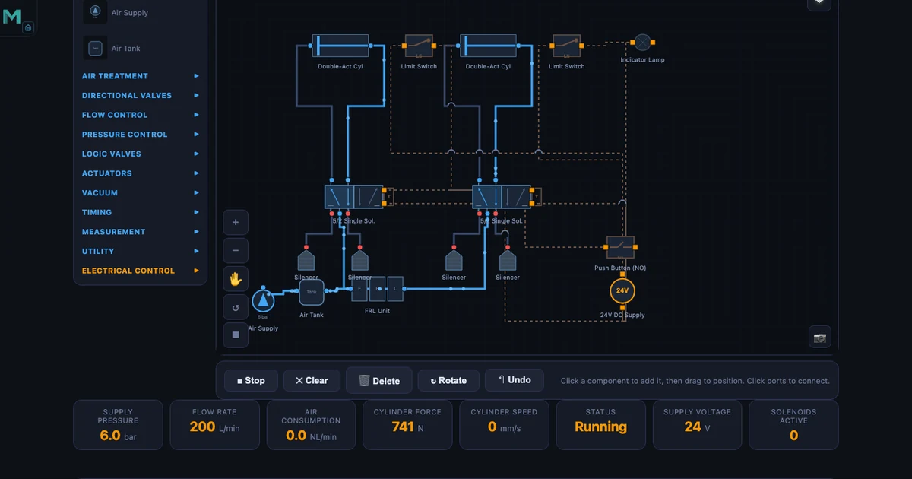
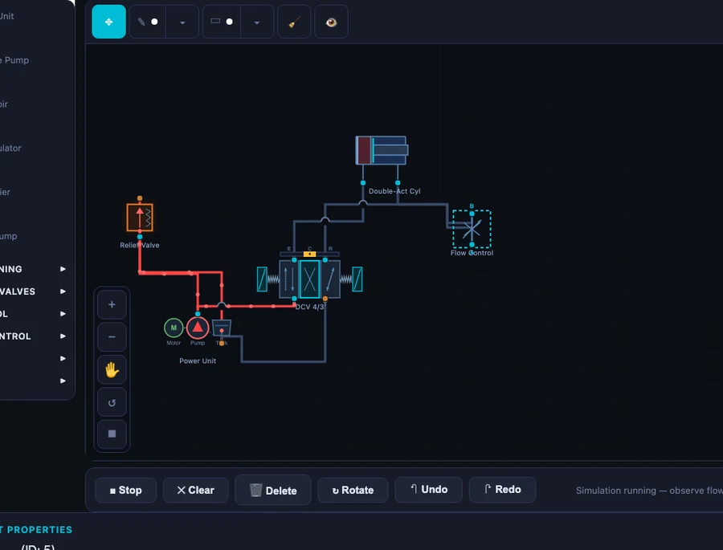

Free FESTO FluidSIM Alternative — Simulate Hydraulic, Pneumatic and Electro-Pneumatic Circuits Online

- NHIT VisualLab's four free, browser-based fluid power tools — Pneumatic Circuit Builder (39 ISO 1219 components, 10 presets), Hydraulic Circuit Builder (10 circuit topologies), Electro-Pneumatic Circuit (relay logic, 8 presets) and Hydraulic Cylinder Calculator — replace a $500–$2,000+ per-seat FESTO FluidSIM license with no download, account or Windows install required.
- They use the same ISO 1219 symbols as FluidSIM, animate compressed-air and oil flow live, and run on any laptop, tablet or phone.
- Core formulas are built in: pneumatic cylinder force F = P × A (e.g. 63 mm bore at 6 bar ≈ 1870 N) and hydraulic extend force = pressure × bore area (63 mm bore at 20 MPa ≈ 62.3 kN).
A single FESTO FluidSIM classroom license can cost more than a semester's tuition fees. For a lab of 30 students, you're looking at $15,000–$60,000 in licensing — before you've bought a single solenoid valve. For many TVET colleges and vocational training centres, that's simply not a conversation that ends with a purchase order. Students who want to practise circuit design at home face the same wall: FluidSIM is Windows-only, subscription-gated, and out of reach without institutional backing.
The four fluid power simulators on NHIT VisualLab are free. No account. No download. No license key. They run in any modern browser on any device — laptop, tablet, phone — and they use the same ISO 1219 symbols your students will see in every workshop manual and on every certification exam. This article walks through each tool in detail, compares them directly to FluidSIM, and shows how to fit them into a TVET or fluid power curriculum.
Why FluidSIM Is Out of Reach — and Why It Doesn't Have to Be
FluidSIM is genuinely good software. FESTO has spent decades refining it, and the professional version includes physics-based simulation with real component data sheets, electrical circuit simulation, and a library of FESTO-specific parts. If you're running an industrial training facility where trainees move directly onto FESTO equipment, the tool-to-hardware continuity has value.
But consider the scenario many instructors actually face: a cohort of 25 first-year students learning pneumatic fundamentals. They need to understand how a 5/2 valve works, trace the flow path in a sequential A+B+ circuit, and calculate the cylinder force for a given bore and pressure. They don't need a $2,000 software package. They need a tool that shows ISO 1219 symbols, lets them load a pre-built circuit, hit Run, and watch compressed air flow. That's exactly what the Pneumatic Circuit Builder provides.
FluidSIM also locks students out at home. Without institutional login or a personal licence, a student who wants to revise a circuit diagram at 10 pm before an exam is stuck with a PDF schematic and their imagination. NHIT VisualLab's tools load in a browser tab. Always.
Four Free Simulators That Cover the Same Ground
Four tools collectively cover pneumatic circuit design, hydraulic circuit design, electro-pneumatic relay logic, and hydraulic cylinder force calculation. They share a consistent interface, use ISO 1219 symbols throughout, and each includes an Explore mode with concept cards that explain the underlying physics. Here's a structured look at each one.
Pneumatic Circuit Builder — 39 Components, ISO 1219, 10 Pre-Built Circuits
The Pneumatic Circuit Builder is the most comprehensive of the four tools. It contains 39 components, every one drawn to ISO 1219 — the international standard for fluid power circuit diagrams. Valves include 2/2, 3/2 (push button NC/NO, roller lever, idle-return, plunger, solenoid, pilot), 5/2 (single solenoid, double solenoid, double pilot, single pilot), 5/3 (closed centre, exhaust centre, pressure centre, and pilot variants), 4/3 (closed, exhaust, single pilot, double pilot), plus logic elements: shuttle valve (OR function), dual pressure valve (AND function), quick exhaust valve, and timer valve. FRL units, flow controls, throttle valves, silencers, and both single-acting and double-acting cylinders round out the library.
Ten pre-built circuits span the full curriculum: Direct Control, Speed Control, Auto Return, AND Logic, OR Logic, Time Delay, Sequential A+B+, Cascade, Vacuum Pick and Place, and Pilot Control. Load the Sequential A+B+ preset and you immediately see two double-acting cylinders, four 5/2 valves (two spring-return for push buttons, two pilot-operated for sequencing), limit switches at each cylinder end, and the flow path from the FRL unit through the circuit. Hit Run. Animated flow traces the pilot signal from the first cylinder's end switch to the second valve, just as it would on a live rig.
The Explore mode contains 16 concept cards: Boyle's Law, the core pneumatic formulas, FRL function, valve types, and application circuits. The formulas are the ones your students need. Cylinder force:
\[F = P \times A\]
For a 63 mm bore cylinder at 6 bar: \(A = \pi/4 \times 0.063^2 = 3117\,\text{mm}^2\), \(F = 0.6\,\text{MPa} \times 3117\,\text{mm}^2 = \mathbf{1870\,N}\). Air consumption over a cycle:
\[Q = A \times L \times (P_{\text{gauge}}+1) \times n\]
For a 50 mm bore, 200 mm stroke cylinder at 6 bar, running at 10 cycles per minute: \(Q = 1963\,\text{mm}^2 \times 200\,\text{mm} \times 7 \times 10 = \mathbf{55\,\text{NL/min}}\). That figure matters when sizing an FRL unit or calculating compressor capacity for a production line. And piston speed:
For a flow rate of 100 NL/min at 6 bar entering a 40 mm bore cylinder (\(A = 1257\,\text{mm}^2\)): \(v \approx \mathbf{190\,\text{mm/s}}\). Students who can work through these numbers — and immediately see the animated equivalent on screen — build understanding that stays with them on the workshop floor.
One detail that sets this tool apart from most browser-based alternatives: exhaust hiss audio plays during simulation. Small thing. But it makes the simulation feel alive in a way that silent diagrams never do.
Hydraulic Circuit Builder — Pascal's Law in Action
The Hydraulic Circuit Builder covers the core hydraulic curriculum with ten pre-built circuit topologies: Meter-In, Meter-Out, Regenerative, Sequence, Bleed-Off, Counterbalance, Safety, Priority, Sync Cylinders, and Precision Speed. Components include gear, vane, and piston pump types; relief valves; 4/3 directional control valves in closed-centre, exhaust-centre, and pilot-operated variants; 4/2 DCVs; counterbalance valves; flow control valves; check valves; and both single-acting and double-acting cylinders. Oil flow animates in blue through every circuit.
The Explore mode walks through the hydraulic equivalent of the pneumatic formulas. Hydraulic power:
\[P_{\text{hyd}} = \dfrac{p \times Q}{600}\]
At 200 bar and 30 L/min: \(P_{\text{hyd}} = 200 \times 30 / 600 = \mathbf{10\,\text{kW}}\). That number grounds discussions about pump motor sizing in something concrete — not abstract watts but a pressure and flow rate students can visualise. Hydraulic advantage:
If input piston diameter is 20 mm and output piston diameter is 80 mm, the mechanical advantage is \(MA = A_2/A_1 = (80/20)^2 = \mathbf{16}\). A 100 N input force produces 1600 N output. Pascal's law, made visible.
The Regenerative circuit is worth spending time on. Rod-side exhaust oil routes back to the cap side during extension, supplementing pump flow and increasing extension speed. Force drops to \(F = P \times A_{\text{rod}}\) while speed rises to \(v = Q/A_{\text{rod}}\). Students who trace the blue flow path in the simulator understand this intuitively before you've written the formula.

Electro-Pneumatic Circuit — Relay Logic Without Wiring a Single Component
The Electro-Pneumatic Circuit simulator extends the pneumatic tool with a full electrical control layer. The same ISO 1219 pneumatic components appear above the line; below it, the electrical circuit: solenoid-operated 5/2 and 3/2 valves, relay contacts (NO and NC), limit switches, push buttons, coil outputs, and PLC-style signal wiring. This is the combination that governs real industrial pneumatic panels — from automated assembly cells to packaging lines.
Eight pre-built circuits cover the full electro-pneumatic curriculum: Direct Solenoid Control, Self-Holding Circuit, Auto Return with Limit Switch, Pressure-Dependent Switching, Time-Delayed Actuation, Two-Hand Safety, Sequential A+B+, and Emergency Stop Logic. The Two-Hand Safety circuit is particularly useful for demonstrating safety relay concepts — both buttons must be pressed simultaneously within a time window, exactly as required by EN ISO 13849 for press guards. Students see why the circuit requires two separate branches before a coil energises, rather than just reading about it in a standard.
Run the Sequential A+B+ circuit and watch the relay logic sequence through: limit switch S1 closes → Relay K1 energises → Solenoid Y1 shifts valve → Cylinder A extends → Limit switch S2 closes → Relay K2 energises → Solenoid Y2 shifts valve → Cylinder B extends. The electrical and pneumatic halves animate together. Audio includes both the exhaust hiss of the pneumatic side and an electrical click when relay contacts switch. Fourteen concept cards in Explore mode cover the same pneumatic fundamentals plus relay logic principles and solenoid valve operation.
For any TVET programme that bridges pneumatics and PLC programming, this tool fills the gap cleanly. Students who understand relay ladder logic on this simulator find the transition to actual PLC rungs much less abstract.
Hydraulic Cylinder Calculator — Force, Speed and Area at Your Fingertips
The Hydraulic Cylinder Calculator is a focused tool with one job: compute all the critical cylinder parameters from bore diameter, rod diameter, and pressure. Bore area:
\[A_{\text{bore}} = \dfrac{\pi}{4} D^2\]
For D = 80 mm: \(A_{\text{bore}} = \pi/4 \times 80^2 = \mathbf{5026.5\,\text{mm}^2}\). Annular area (used for retract force):
For bore 100 mm, rod 56 mm: \(A_{\text{ann}} = \pi/4 \times (100^2 - 56^2) = \pi/4 \times 6864 = \mathbf{5390.6\,\text{mm}^2}\).
Extend force for a 63 mm bore at 20 MPa: \(F_{\text{ext}} = 20 \times 10^6 \times (3.14159 \times 0.063^2 / 4) = \mathbf{62.3\,\text{kN}}\). Retract force for bore 63 mm, rod 36 mm at 20 MPa: \(F_{\text{ret}} = 20 \times 10^6 \times \pi/4 \times (0.063^2 - 0.036^2) = \mathbf{42.0\,\text{kN}}\). For a double-acting cylinder with bore 80 mm, rod 45 mm at 16 MPa: extend force 80.4 kN, retract force 55.0 kN. The sliders update these values instantly as you move them.
Fourteen concept cards in Explore mode explain bore area, annular area, extend and retract force calculations, and cylinder types — double-acting, single-acting, telescopic, cushioned, and tandem. For exam revision or quick design checks, this tool is faster and less error-prone than a spreadsheet.
A Direct Comparison: FluidSIM vs NHIT VisualLab
Let's put the comparison in plain terms. FluidSIM has advantages — specifically for facilities already running FESTO hardware, for advanced physics-based simulation with real component data sheets, and for full offline operation. Those are genuine strengths. For the core educational use case — teaching fluid power fundamentals to TVET and engineering students — the picture is different.
| Feature | FESTO FluidSIM | NHIT VisualLab |
|---|---|---|
| Price | $500–$2,000+ per license | Free, no account |
| Installation | Windows only, download required | Browser-based, any device |
| ISO 1219 symbols | ✓ | ✓ |
| Pneumatic circuits | ✓ | ✓ (39 components, 10 presets) |
| Hydraulic circuits | ✓ | ✓ (10 presets, animated flow) |
| Electro-pneumatic | ✓ | ✓ (relay logic, 8 presets) |
| Cylinder calculator | ✓ | ✓ (14 concept cards) |
| Explore / learn mode | Partial | ✓ (16 concept cards per tool) |
| Offline use | ✓ | Limited (needs internet) |
| Mobile / tablet | ✗ | ✓ |
The honest summary: FluidSIM wins on offline access and depth of physics simulation. NHIT VisualLab wins on cost, accessibility, device coverage, and the explicit Explore-mode learning pathway. For most teaching contexts — and for every student sitting at home the night before an exam — that trade-off lands firmly in favour of the free browser tool.
How to Use These Tools in a TVET / Fluid Power Course
A practical scenario: you're teaching a fluid power unit to 28 Level 3 TVET students. The college has eight Windows PCs in the workshop, three of which run FluidSIM (the other licenses expired). Students take turns in groups of three. The rest work from printed schematics. They're bored, disengaged, and three weeks behind where you'd like them to be.
Shift the class to NHIT VisualLab on their own devices. Every student opens the Pneumatic Circuit Builder on their laptop, tablet, or phone simultaneously. Start with the AND Logic preset — one of the most frequently misunderstood circuits. Ask them to trace the flow path before you explain it. Give them five minutes. The questions that follow are sharper, more specific, and more useful than questions about a printed diagram they can't interact with.
For the electro-pneumatic unit, load the Self-Holding circuit in the Electro-Pneumatic tool. Ask: what happens to the cylinder if you release the push button? Because of the self-holding relay contact, nothing — the circuit latches. Ask: how do you stop it? Add a NC stop button in series. Students modify the concept right there in the tool. That kind of active experimentation is what moves circuit design from memorisation to understanding.
For assessment preparation, the Hydraulic Cylinder Calculator is particularly effective. Give students a design brief — a press with 63 mm bore, 36 mm rod, 200 bar system pressure — and ask them to calculate extend and retract forces before checking with the tool. Extend: \(F_{\text{ext}} = 62.3\,\text{kN}\). Retract: \(F_{\text{ret}} = 42.0\,\text{kN}\). They learn the formulas through using them, not by copying them off a whiteboard.
The tools also complement each other within a single lesson. Start with the Hydraulic Circuit Builder's Meter-Out preset — get students comfortable with flow path animation. Move to the Hydraulic Cylinder Calculator to compute the forces involved. Connect the two: the flow control in the return line governs speed; the bore and pressure determine how much force is available at that speed. Physics, circuit, and calculation in one 50-minute session. This is the same integrative approach described in the online teaching challenges article — breaking topics into interactive micro-sessions reduces cognitive load and dramatically improves retention for remote and in-person learners alike.
Try It Yourself
All four tools are free — no account, no download, no license.
Key Takeaways
- FluidSIM licenses cost $500–$2,000+ per seat and require Windows installation — the four NHIT VisualLab fluid power tools cover the same core curriculum at zero cost, browser-based, on any device.
- The Pneumatic Circuit Builder includes 39 ISO 1219 components and 10 pre-built circuits. At 6 bar with a 63 mm bore cylinder, extend force is 1870 N. At 50 mm bore, 200 mm stroke, 10 cycles per minute, air consumption is 55 NL/min.
- The Hydraulic Circuit Builder covers 10 circuit topologies with animated oil flow. A 200 bar, 30 L/min system delivers 10 kW of hydraulic power. Regenerative circuits route rod-side exhaust back to cap side — faster extension, reduced force.
- The Electro-Pneumatic Circuit simulator adds relay ladder logic with solenoid valves, limit switches, relay contacts (NO/NC), and eight pre-built circuits from self-holding to two-hand safety and emergency stop.
- The Hydraulic Cylinder Calculator computes extend and retract forces instantly. For a 63 mm bore at 20 MPa: extend force 62.3 kN; for bore 63 mm, rod 36 mm: retract force 42.0 kN.
- Explore mode across all four tools provides 14–16 concept cards per tool, making these suitable for self-directed study as well as structured classroom instruction — with or without a textbook.
Frequently Asked Questions
Is this a genuine free alternative to FESTO FluidSIM?
Yes — for educational purposes, the four NHIT VisualLab fluid power tools cover the core curriculum of most fluid power and TVET courses. The Pneumatic Circuit Builder includes 39 ISO 1219 components and 10 pre-built circuits; the Hydraulic Circuit Builder covers 10 circuit topologies including regenerative and sequence circuits; the Electro-Pneumatic simulator adds relay ladder logic and solenoid control. All four tools are free with no download, no account, and no license required.
Does the pneumatic simulator use ISO 1219 symbols?
Yes. All components in the Pneumatic Circuit Builder and Electro-Pneumatic Circuit simulator are drawn to ISO 1219 standards — the same international standard used in FESTO FluidSIM and in real engineering documentation. This means circuits drawn here look identical to professional circuit diagrams and are directly applicable to real-world commissioning and troubleshooting.
Can I simulate electro-pneumatic circuits with solenoid valves and relay logic?
Yes. The Electro-Pneumatic Circuit simulator includes solenoid-operated 5/2 and 3/2 valves, relay contacts (NO and NC), limit switches, push buttons, and coil outputs — the same elements used in PLC-controlled pneumatic panels. Eight pre-built circuits cover direct solenoid control, self-holding relay circuits, auto-return with limit switches, time-delayed actuation, two-hand safety, sequential A+B+ control, and emergency stop logic.
What hydraulic circuit topologies does the hydraulic simulator cover?
The Hydraulic Circuit Builder includes ten pre-built circuit topologies: Meter-In, Meter-Out, Regenerative, Sequence, Bleed-Off, Counterbalance, Safety, Priority, Sync Cylinders, and Precision Speed. Each circuit animates oil flow in real time and can be modified by changing component parameters. The Regenerative circuit is particularly useful for understanding rapid-traverse phases in press and machine-tool applications.
How do I calculate hydraulic cylinder extend and retract forces?
Use the Hydraulic Cylinder Calculator tool. Extend force = pressure × bore area: for a 63 mm bore at 20 MPa, F_ext = 20 × 10&sup6; × (π/4 × 0.063²) ≈ 62.3 kN. Retract force = pressure × annular area (bore area minus rod area): for bore 63 mm, rod 36 mm at 20 MPa, F_ret ≈ 42.0 kN. The tool computes these automatically as you adjust diameter and pressure sliders, with all 14 formula concept cards available in Explore mode.
Fluid power underpins more of modern manufacturing than most students realise — from the brake system that stopped the truck that delivered their breakfast cereal, to the injection moulding machine that made the plastic cup their coffee came in. Understanding how pneumatic and hydraulic circuits work at a circuit level, with real ISO 1219 symbols and real formulas, is a foundational competency for any mechanical or automation technician. These four tools exist to put that understanding within reach — no budget required, no installation, no waiting for a PC in the workshop to be free.